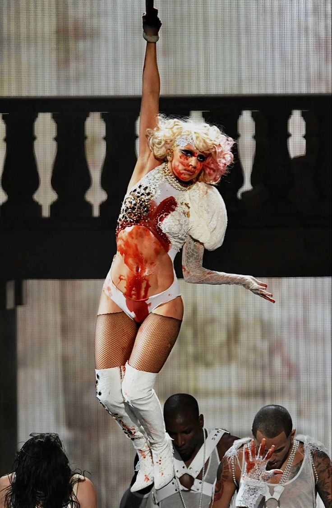

Now, let's talk about some interesting and rare facts about her:
The Origins of Born This Way
Lady Gaga wrote the hit song Born This Way in just ten minutes while in the shower. She described it as a
divine moment of inspiration that solidified her connection to her fans and her belief in self-love.
Meat Dress Statement
The meat dress she wore to the 2010 MTV Video Music Awards wasn't just a shock statement. Gaga
explained it was a stand for human rights, symbolizing that people should be valued for who they are on the
inside.
She's a Musical Prodigy
Gaga began playing the piano by ear at four years old and wrote her first piano ballad at 13. She credits
the instrument for shaping her artistry.
Influence on Pop Culture
Gaga popularized terms like “Little Monsters” (for her fans) and made bold fashion statements that pushed
the boundaries of art and music.
An Unreleased Song Inspired by Michael Jackson
Gaga wrote an unreleased song called Tea that was inspired by Michael Jackson's ability to make music that
connected with people emotionally.
Tattoo Tribute to Her Fans
She has a tattoo on her arm that says “Little Monsters” in honor of her fanbase.
Philanthropy Queen
She once donated $1 million to support disaster relief efforts after Hurricane Sandy.
She Has a Guinness World Record
Gaga was the first person to reach one billion views on YouTube back in 2010.
She's Multi-Talented
Apart from singing and acting, Gaga is also an excellent cook and enjoys making Italian dishes inspired by
her family's roots.
And her Iconic quotes:
“I'm beautiful in my way, 'cause God makes no mistakes. I'm on the right track, baby, I was born this
way.” (Born This Way)
“Ignore all hatred and criticism. Live for what you create, and die protecting it.”
Don'i ever let a soul in the world tell you that you can't be exactly who you are.”
“I want women and men to feel empowered by a deeper and more psychotic part of themselves. The part
they're always trying to hide.”
“My fans are my friends. I call them my little monsters because they're fierce.”
“You have to be unique, and different, and shine in your own way.”
“You laugh at me because I'm different. I laugh at you because you're all the same.”
“I want my fans to love themselves. It's almost like I want to hypnotize them so when they hear my
music, they love themselves instantly.”
“Born This Way is about being yourself, and loving who you are and being proud.”
Why i love her
Lady Gaga inspires me because:
She embraces uniqueness and individuality:
She encourages people to be unapologetically themselves, which
makes me feel confident about my own quirks.
Her creativity and artistry are unmatched:
From her music to her fashion, Gaga transforms everything she
touches into art.
She is fearless and supports humans rights:
Whether it's advocating for LGBTQ+ rights or mental health
awareness, she's a true role model for using fame for good.
Her vocals and songs are incredible:
Her voice can be tender, powerful, or electrifying, and her songs are
masterpieces that resonate deeply.
I have to mention Gaga's Paparazzi performance on 2009 VMAs.
Gaga's performance also served as a poignant reminder of the toll fame took on icons like Marilyn
Monroe,
highlighting the dark realities of idolization and public scrutiny. Bold, raw, and unforgettable, it was an
iconic moment that showcased her fearless creativity and profound storytelling.

Lady Gaga is more than a global superstar—she is a symbol of individuality, creativity, and empowerment. Through
her music, performances, and activism, she inspires millions to embrace who they are unapologetically. Whether
redefining pop culture or standing up for human rights, Gaga continues to prove that artistry and authenticity
can change the world. This presentation celebrates her genius, her passion, and her enduring legacy as an artist
who dared to be different.